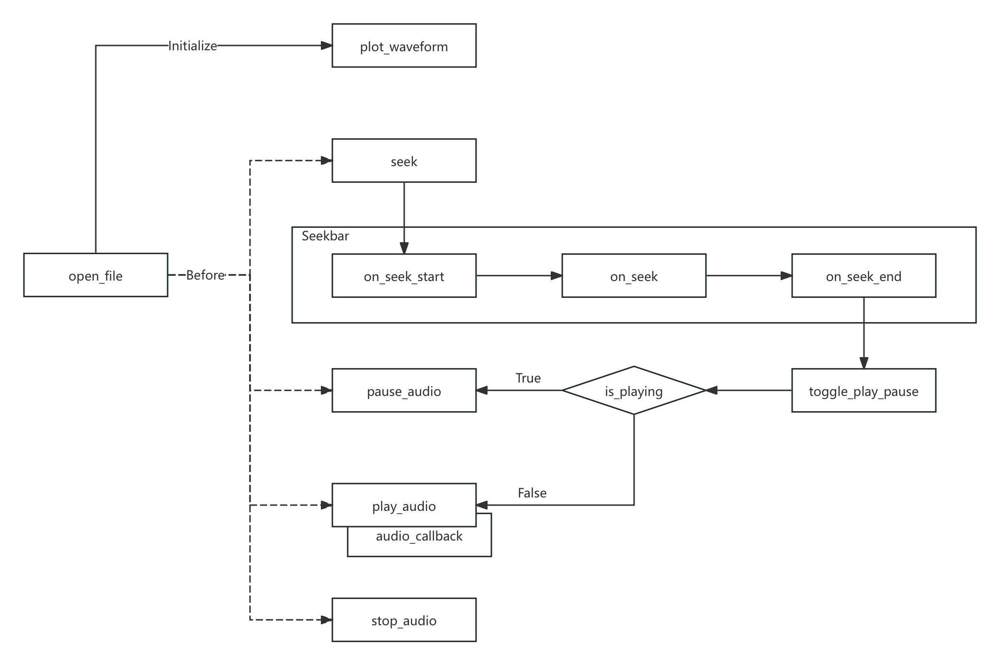
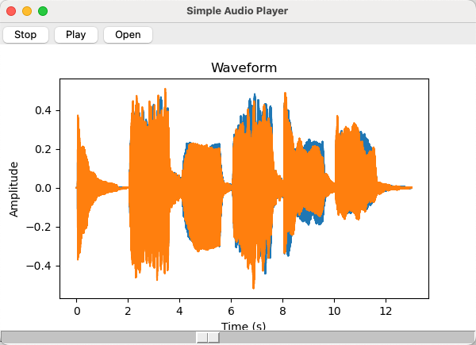

5.1.2 音频分析库（SoundFile、PyAudio、Librosa、Aubio）
在完成对基础库的熟悉后，我们接下来需要做的就是对工程中，音视频分析的相关核心功能库的学习。以音频分析库为切入点。
如果期望对 一段音频（或音频流）进行解读，根据我们已有的认知，将当前的音频数据从封装的音频格式，还原为采样模拟信号对应的 PCM 数字信号载体 只是第一步。该操作是后续所有工作的起点。
而音频格式在前文已有介绍，分为 三大类别，即 无压缩编码格式、无损压缩编码格式、有损压缩编码格式。虽然能通过一些针对 某单个类型 或 类型族 的 音频编解码库 来做解码工作，但我们在分析过程中，更希望能够通过 简单而统一 的方式，排除掉格式本身细部的工程干扰。使我们能够更关注于对 音频所含有信息本身 的分析。
既然如此，为何不直接使用大名鼎鼎的 FFMpeg 来完成从 编解码到分析，甚至是 重排、编辑 等操作呢？
其中的关键就在于，FFMpeg 虽然功能强大，但在以 实时处理、数据集成、特征提取 等为主要应用场景的音频分析情况下，FFMpeg 并不具备足够的优势。更不用提 Python 的使用环境 和 对断点调试临时插值，与 基础库的高度兼容 方面的要求了（尤其对 模型训练时，提取的数据能够 直接被训练过程使用 的这一点）。
所以，音频分析场景，除非只需要当前音视频数据的 元信息（Metadata），即 头部信息（Header），一般会采用以下这些库来进行。至于 FFMpeg ，在实际使用中会把其核心能力局限于 编解码 和 转码 的范围里，虽然 其核心库 和 辅助插件 是包含了包括滤镜在内的多种功能的，但通常我们只会以 最简形式接入。这一部分，伴随着网络推拉流协议和更贴近于规格的编解码协议库（如 x264 等），将在本系列书籍的进阶篇中细讲。此处暂不做更进一步的讨论。
现在，让焦点回到音频分析库上。常用的音频分析库主要有四个，为 SoundFile、PyAudio、Librosa、Aubio，分别对应 [ 音频文件读写、音频流数据的输入输出、工程乐理分析、实时音频处理 ] 的需求。
SoundFile（Python Sound File）
SoundFile（PySoundFile [Python Sound File]） 是一个 用于读写音频文件的 Python 库，主要被用于解码（或者编码）常用的 音频格式文件 [4] 。例如前文介绍过的 WAV、AIFF、FLAC 等大多数常见音频格式，SoundFile 都已完整支持。并且，通过 SoundFile 取出的音频数据，可以和其他音频分析库（如 Librosa、Aubio 等）和科学计算库（如 NumPy、SciPy 等）配合使用。
实际上，SoundFile 核心能力来自于 C开源库 Libsndfile，正是 Libsndfile 为它 提供了多种音频文件格式的支撑。而 PySoundFile 则可以看做是 Libsndfile 这个 C语言库的 Python 套接访问入口。因此，如果我们在常规工程中存在对音频文件的读写需求，不妨考虑采用 Libsndfile 来处理，它的官网位于 http://www.mega-nerd.com/libsndfile/ ，含有该库的相关技术参数。
主要功能：
- 支持 WAV、AIFF、FLAC、OGG 等多种常见 音频文件格式，适用于 广泛的 音频读写需求
- 支持长音频处理，提供快速读写大文件的功能，并可用于临时性的（分块）流式处理
- 提供 高可定制化的 API，允许用户自定义音频处理流程和数据操作，适合快速分析
- 允许以不同的数据格式（如浮点型、整型）读取和写入音频数据，及 基本元数据访问
- 与主流科学计算库（如 NumPy、Pandas、SciPy 等）的 无缝集成
- 单一的文件操作专精库，不存在多个子模块，仅有有限但明确的 API 入口
基础库（sf.）的常用函数（简，仅列出名称）：
- 数据结构： <SoundFile>
- 关联文件： open
- 音频读写： read, write
- 基本信息： info
核心类（sf.SoundFile 即 <SoundFile>）的常用函数（简，仅列出名称）：
- 基础参数： samplerate, channels, format, subtype, endian, frames
- 帧位索引： seek, tell
- 数据访问： read, write, read_frames, write_frames
- 分块读写： buffer_read, buffer_write
由上可知，SoundFile 本身的调用极其简便，但已满足完整的音频文件读写需求。开源项目位于 Github:bastibe/python-soundfile。使用细节，可自行前往 官方档案馆查阅。
PyAudio（Python Audio）
PyAudio（Python Audio） 是音频分析中 常用的音频输入输出操作库，即 音频 I/O 库 [5] 。换句话说，它提供了一组工具和函数，使得开发者可以在项目的 Python 程序中，利用 PyAudio 已有的函数接口，快速进行音频的流式（这里指本地流）录制和输出。同 SoundFile 一样，PyAudio 依赖于底层 C语言库 PortAudio 的帮助，而其内核 PortAudio 库实则为一个 专精于多种操作系统上运行（即跨 Windows、MacOS、Linux 平台）的底层音频输入输出（I/O）库。
所以，与 SoundFile 注重于对音频文件（即本地音频流结果）的操作不同，PyAudio 或者说 PortAudio 的操作重点，在于 处理对 “实时” 音频流的捕获和析出。实时音频流，是能够被连续处理传输的音频数据，例如采样自麦克风输入模数转换后的持续不断的数字信号，或者取自播放音频的连续到来分块数据，即 过程中音频数据。
由此，音频分析中常用 PyAudio 来完成对被分析音频的 “启停转播”（Play/Stop/Seek/Pause），所谓 音频本地流控（LASC [Local Audio Stream Control]）。
主要功能：
- 专业音频本地流控 Python 库，支持实时音频流的捕获和播放，适合 实时音频处理任务
- 稳定的 跨平台兼容性，完整覆盖主流操作系统，包括 Windows、macOS 和 Linux
- 灵活的 音频流配置，提供多种配置选项，如采样率、通道数、样本格式、缓冲区大小等
- 提供 接入式回调，支持使用回调函数处理音频数据，适合低延迟的实时音频分析
- 与主流科学计算库 和 其他音频库（如 SoundFile）的 无缝集成
- 单一的音频本地流读写专精库，不存在多个子模块，仅有有限但明确的 API 入口
基础库（pyaudio.）由于特殊的套接设计，仅用于创建 <PyAudio> 即 PortAudio 实例：
核心类（pyaudio.PyAudio 即 <PyAudio> 设备实例）的常用函数（简，仅列出名称）：
- 销毁实例： terminate
- 联音频流： open （返回 <Stream> 实例，通过 stream_callback 参数配置回调）
- 设备查询： get_device_count, get_device_info_by_index, get_host_api_count, get_default_input_device_info, get_default_output_device_info, get_host_api_info_by_index, get_device_info_by_host_api_device_index
- 参数查验： get_sample_size, is_format_supported
核心类的（pyaudio.Stream 即 <Stream> 音频流实例）的常用函数（简，仅列出名称）：
- 音频流启停： start_stream, stop_stream
- 音频流关闭： close（注意，<Stream> 的 open 状态来自于设备实例，亦是其初始状态）
- 流状态检测： is_active, is_stopped
- 流数据读写： read, write
上述关键函数已包含 PyAudio 的 几乎全部调用，但并没有列出 PyAudio 回调格式。这是因为，这一部分正是 PyAudio 分析适用性的关键。在具体使用中，PyAudio 回调 的设定方式，和回调各参数意义与取值，是我们留意的重点。
参考 PyAudio 0.2.14 当前最新版，回调的设置方式和格式都是固定的，有：
def callback(in_data, frame_count, time_info, in_status):
# 在此处处理音频数据（例如，进行实时分析或处理）
return (out_data, out_status)
p = pyaudio.PyAudio()
stream = p.open(
format=p.get_format_from_width(2),
channels=1 if sys.platform == 'darwin' else 2,
rate=44100,
input=True,
output=True,
stream_callback=callback
)
其中，callback(in_data, frame_count, time_info, status) 即 回调传入，包含四个关键参：
- in_data 为 音频数据的输入流，通常配合 np.frombuffer(in_data, dtype=np.int16) 读取数据
- frame_count 为 输入流当前数据对应音频帧数，即当前 in_data 数据覆盖的 帧数
- time_info 是一个包含了 三个设备相关时间戳 的 数据字典，有参数（注意表述）：
- input_buffer_adc_time 表示 输入音频数据被 ADC 处理时的时间戳（如果适用）
- output_buffer_dac_time 表示 输出音频数据被 DAC 处理时的时间戳（如果适用）
- current_time 表示 当前时间，即 当前调用触发时的系统时间戳
- in_status 是 记录当前输入回调时，流状态的枚举类标识。可取三个状态常量，分别是：
- pyaudio.paContinue 表示 流继续，即恢复播放和正常播放时的状态，也是默认状态
- pyaudio.paComplete 表示 流完成，即代指当前输入流数据为最末尾的一组
- pyaudio.paAbort 表示 流中止，即立刻停止时触发，一般为紧急关流或异常情况
在 callback 处理完毕后，回调要求以 return (out_data, out_status) 的 格式返回。同样：
- out_data 为 音频数据的输出流，根据协定好的音频 PCM 位数对应的格式输出，一般同输入
- out_status 是 记录当前输出的状态，同 in_status 的可取值一致，一般同 in_status 不变
配置好 callback 后，我们该如何使用呢？只需要于 <PyAudio> 实例调用 open 开启流 <Stream> 实体时，以 stream_callback=callback 将 函数句柄以参数传入 即可生效。而这里的 callback 也可 根据具体情况修改命名，比如 audio_analyze_callback 。
随之就可以在回调中，完成分析作业了。
Librosa
Librosa 是一个功能强大且易于使用的 音频/乐理（工程）科学分析原生 Python 库，成体系的提供了用于 音频特征提取、节拍节奏分析、音高（工程）估计、音频效果器（滤波、特效接口） 等处理的算法实现。其设计理念来自于 SciPy 2015 年的第十四届 Python 科学大会中，有关音频处理、音频潜藏信息提取与分析快捷化的讨论 [6] 。因此，在设计之初就完全采用了，与其他科学计算库（如 NumPy、SciPy）和可视化库（主要指 Matplotlib）的 无缝集成。而极强的分析能力和可操作性（工程层面），使 Librosa 成为了我们做 音频分析与操作时的重要工具。
必须熟练掌握。
主要功能：
- 临时处理友好，提供简便的方法，在必要时做临时读取和写入音频文件，支持多种格式
- 快速时频转换，提供短时傅里叶变换（STFT）、常规Q变换（CQT）等，方便时频域分析
- 音频特征提取，支持对梅尔频率倒谱系数（MFCC）、色度特征、频谱对比度等特征提取
- 节拍节奏分析，具有节拍跟踪、起音检测等，音乐（工程）分析能力
- 分割与重采样，提供音频分割与重采样工具，便于快速分析对比
- 调音与音频特效，具有音高估计和调音功能，并支持音频时间伸缩和音高变换等音频效果
- 当然还有最重要的【无缝集成】特性
基础库（librosa.）的常用函数（简，仅列出名称）：
- 音频加载： load, stream
- 音频生成： clicks, tone, chirp
- 简化分析： to_mono, resample, get_duration, get_samplerate
- 时频分析： stft, istft, reassigned_spectrogram, cqt, icqt, hybrid_cqt, pseudo_cqt, vqt, iirt, fmt, magphase
- 时域校准： autocorrelate, lpc, zero_crossings, mu_compress, mu_expand
- 谐波分析： interp_harmonics, salience, f0_harmonics, phase_vocoder
- 相位校准： griffinlim, griffinlim_cqt
- 响度单位换算： amplitude_to_db, db_to_amplitude, power_to_db, db_to_power, perceptual_weighting, frequency_weighting, multi_frequency_weighting, A_weighting, B_weighting, C_weighting, D_weighting, pcen
- 时轴单位换算： frames_to_samples, frames_to_time, samples_to_frames, samples_to_time, time_to_frames, time_to_samples, blocks_to_frames, blocks_to_samples, blocks_to_time
- 频率单位换算： hz_to_note, hz_to_midi, hz_to_svara_h, hz_to_svara_c, hz_to_fjs, midi_to_hz, midi_to_note, midi_to_svara_h, midi_to_svara_c, note_to_midi, note_to_svara_h, note_to_svara_c, hz_to_mel, hz_to_octs, mel_to_hz, octs_to_hz, A4_to_tuning, tuning_to_A4
- 基底频率生成： fft_frequencies, cqt_frequencies, mel_frequencies, tempo_frequencies, fourier_tempo_frequencies
- 乐理乐谱工具： key_to_notes, key_to_degrees, mela_to_svara, mela_to_degrees, thaat_to_degrees, list_mela, list_thaat, fifths_to_note, interval_to_fjs, interval_frequencies, pythagorean_intervals, plimit_intervals
- 乐理音高音调： pyin, yin, estimate_tuning, pitch_tuning, piptrack
- 适配杂项： samples_like, times_like, get_fftlib, set_fftlib
图表显示扩展（librosa.display.）的常用函数（简，仅列出名称，依赖于 Matplotlib）：
- 数据可视化： specshow, waveshow
- 坐标轴设置： TimeFormatter, NoteFormatter, SvaraFormatter, FJSFormatter, LogHzFormatter, ChromaFormatter, ChromaSvaraFormatter, ChromaFJSFormatter, TonnetzFormatter
- 适配杂项： cmap, AdaptiveWaveplot
音频特征提取（librosa.feature.）的常用函数（简，仅列出名称）：
- 工程频谱特征： chroma_stft, chroma_cqt, chroma_cens, chroma_vqt, melspectrogram, mfcc, rms, spectral_centroid, spectral_bandwidth, spectral_contrast, spectral_flatness, spectral_rolloff, poly_features, tonnetz, zero_crossing_rate
- 乐理节奏特征： tempo, tempogram, fourier_tempogram, tempogram_ratio
- 特征计算： delta, stack_memory
- 反向逆推： inverse.mel_to_stft, inverse.mel_to_audio, inverse.mfcc_to_mel, inverse.mfcc_to_audio
起音检测扩展（librosa.onset.）的常用函数（简，仅列出名称）：
- 峰值检测： onset_detect
- 小值回溯： onset_backtrack
- 强度统计： onset_strength, onset_strength_multi
节拍节奏扩展（librosa.beat.）的常用函数（简，仅列出名称）：
- 节拍追踪： beat_track
- 主位脉冲： plp
语谱分解扩展（librosa.decompose.）的常用函数（简，仅列出名称）：
音频效果器扩展（librosa.effects.）的常用函数（简，仅列出名称）：
- 谐波乐源分离： hpss, harmonic, percussive
- 时间伸缩： time_stretch
- 时序混音： remix
- 音高移动： pitch_shift
- 信号操控： trim, split, preemphasis, deemphasis
时域分割扩展（librosa.segment.）的常用函数（简，仅列出名称）：
- 自相似性： cross_similarity, path_enhance
- 重复矩阵： recurrence_matrix, lag_to_recurrence
- 延迟矩阵： timelag_filter, recurrence_to_lag
- 时域聚类： agglomerative, subsegment
顺序模型扩展（librosa.sequence.）的常用函数（简，仅列出名称）：
- 顺序对齐： dtw, rqa
- 维特比（Viterbi）解码： viterbi, viterbi_discriminative, viterbi_binary
- 状态转移矩阵： transition_uniform, transition_loop, transition_cycle, transition_local
跨库通用扩展（librosa.util.）的常用函数（简，仅列出名称）：
- 数组转换： frame, pad_center, expand_to, fix_length, fix_frames, index_to_slice, softmask, stack, sync, axis_sort, normalize, shear, sparsify_rows, buf_to_float, tiny
- 条件匹配： match_intervals, match_events
- 统计运算： localmax, localmin, peak_pick, nils, cyclic_gradient, dtype_c2r, dtype_r2c, count_unique, is_unique, abs2, phasor
- 输入评估： valid_audio, valid_int, valid_intervals, is_positive_int
- 本库样例： example, example_info, list_examples, find_files, cite
具体使用细节，可自行前往项目 官方档案馆查阅 。
Librosa 在音频方面，涵盖了大多数基本的科学分析手段，足够一般工程使用。
但在 数据科学方面 和 集成性 的高度倾注，也让 Librosa 的 实时性相对有所降低（本质为复杂度和精度上升，所伴随算力消耗的升高）。可若此时我们对误差有相对较高的容忍度，且更希望音频处理足够实时和高效时，就得采用 Aubio 库来达成这一点了。Aubio 和 Librosa 的特性相反，是满足这种情况有效补充手段。
Aubio
Aubio 是主要用于 音乐信息检索（MIR [Music Information Retrieval]） 的 跨平台轻量级分析库。设计之初就是期望实时进行 MIR 使 Aubio 采用了 C语言 作为库的核心语言。不过，因其已在自身的开源项目中，实现了 Python 的套接调用入口 [7] ，我们仍然可以在 Python 中使用。
功能性方面，Aubio 和 Librosa 在音频浅层信息处理上，如果排除效率因素，则几乎不相上下。但 Aubio 的处理效率，不论从整体架构还是本位支撑上，都着实比 Librosa 更加高效。
因此，在音频分析领域，对于类似 ‘音高检测’ 等以实时性作为主要求的分析点，我们常采用 Aubio 而不是 Librosa 处理。而对于 梅尔频率倒谱系数（MFCC）之类的科学分析，则多数用 Librosa 解决，虽然 Aubio 也有此功能。除此外，科学分析不以 Aubio 合并解决的另一原因，还在于 Aubio 对主流科学计算库的兼容程度，要略逊 Librosa 一筹，并向当局限。即有利有弊。
此外，相比 Librosa，Aubio 仅能提供相对基础的分析。
主要功能：
- 实时处理能力，面向低延迟的音频处理能力，专为快速高效设计
- 专精通用检测，提供 节拍检测、起音检测、音符分割等通用基础音频分析
- 简易实时效果，提供快速重采样、过滤、归一化能力，只能实现部分简易效果
- 跨平台支持，可以在主流操作系统（Windows、macOS、Linux）上运行
- 有限集成性，提供 Python 入口，虽不完美兼容计算库，但仍可有效利用实时特性
- 受局限的调用方式，但官方提供了很多样例，学习门槛较低
基础库（aubio.）对常用过程的类封装（简，仅列出名称）：
- 数据读写： <Source>、 <Sink>
- 乐理分析： <Pitch>、 <Tempo>、 <Onset>、 <Notes>、
- 频谱分析： <DCT>、 <FFT>、 <MFCC>、 <FilterBank>、 <SpecDesc>、 <PVOC>
- 简易滤波： <DigitalFilter>
一些常用过程封装的常用操作简示（非所有，仅列出名称）：
- 音高 <Pitch> 相关：[entity]([source]), [entity].set_unit, [entity].set_tolerance
- 节奏 <Tempo> 相关：[entity]([source]), [entity].get_bpm
- 起音 <Onset> 检测：[entity]([source]), [entity].set_threshold
- 音频写入 <Sink> 类： [entity].close
- 音频读取 <Source> 类： [entity].seek, [entity].close
官方样例，可从 项目官网 获取，而各个封装结构内的 额外参数配置/获取方式，可查阅 官方档案馆查阅 。
由于是 C语言库，其 Python 套接后的使用形式，也 相对更接近 C 的使用习惯。所以，Aubio 的的过程类，在创建实体时就需要传入配置参数，如下例：
# 创建音频源读取实例
source = aubio.source('example.wav', 44100, 512)
# 创建音频写入实例
sink = aubio.sink('output.wav', 44100, 1)
# 创建音高检测实例
pitch_o = aubio.pitch("yin", 1024, 512, 44100)
pitch_o.set_unit("Hz")
pitch_o.set_silence(-40)
# 创建节拍检测实例
tempo_o = aubio.tempo("default", 1024, 512, 44100)
# 创建起音检测实例
onset_o = aubio.onset("default", 1024, 512, 44100)
# 创建音调检测实例
notes_o = aubio.notes("default", 1024, 512, 44100)
# 创建离散余弦变换实例
dct_o = aubio.cqt(16)
# 创建快速傅里叶变换实例
fft_o = aubio.fft(1024)
# 创建梅尔频率倒谱系数实例
mfcc_o = aubio.mfcc(40, 1024, 44100)
# 创建滤波器组实例
filterbank_o = aubio.filterbank(40, 1024)
# 创建频谱描述符实例
specdesc_o = aubio.specdesc(aubio.specdesc_type.centroid, 1024)
# 创建相位声码器实例
pvoc_o = aubio.pvoc(1024, 512)
上述过程中，我们进行了一些配置，基本涵盖了 Aubio 在 Python 上的 大部分经常被使用到的实用功能 。以上例中的配置，对创建的实体意义进行说明，有：
- 音频读取（<Source>）：读取 example.wav，采样率 44100 Hz，每次读取 512 帧
- 音频写入（<Sink>）：写入 output.wav，采样率 44100 Hz，单声道
- 音高检测（<Pitch>）：yin 算法，窗口 1024/跳频 512/采样率 44100 Hz，静音阈 -40 dB
- 节拍检测（<Tempo>）：使用默认算法，窗口 1024，跳频 512，采样率 44100 Hz
- 起音检测（<Onset>）：使用默认算法，窗口 1024，跳频 512，采样率 44100 Hz
- 音调检测（<Notes>）：使用默认音集，窗口 1024，跳频 512，采样率 44100 Hz
- 离散余弦变换（<DCT>）：离散余弦变换，以 16 个由短至长余弦周期构成解集（见前文）
- 快速傅里叶变换（<FFT>）：快速傅里叶变换，窗口 1024
- 梅尔频率倒谱系数（<MFCC>）：提取 MFCC，梅尔带 40，窗口 1024，采样率 44100 Hz
- 滤波器组（<FilterBank>）：分解为 40 个频率带，窗口 1024
- 频谱描述符（<SpecDesc>）：提取频谱描述符，计算频谱流，窗口 1024
- 相位声码器（<PVOC>）：配置相位声码器，窗口 1024/每次取 512 个样本 （即跳频 512）
而其使用时的方式，由于是以 __call__ 的 Python 调用实现的，有：
# 读取音频数据并处理
while True:
samples, read = source()
# 音高检测
pitch = pitch_o(samples)[0]
print(f"Detected pitch: {pitch} Hz")
# 节拍检测
is_beat = tempo_o(samples)
if is_beat:
print(f"Beat detected at {source.positions}")
# 起音检测
is_onset = onset_o(samples)
if is_onset:
print(f"Onset detected at {source.positions}")
# 音调检测
notes = notes_o(samples)
print(f"Detected notes: {notes}")
# 离散余弦变换
dct_data = dct_o(samples)
print(f"DCT Data: {dct_data}")
# 快速傅里叶变换
fft_data = fft_o(samples)
print(f"FFT Data: {fft_data}")
# 提取梅尔频率倒谱系数
mfcc_data = mfcc_o(samples)
print(f"MFCC Data: {mfcc_data}")
# 滤波处理
filtered_data = filterbank_o(samples)
print(f"Filtered Data: {filtered_data}")
# 提取频谱描述符
specdesc_data = specdesc_o(samples)
print(f"Spectral Descriptor: {specdesc_data}")
# 使用 pvoc 对象处理样本
spec = pvoc_o(samples)
spectrogram.append(spec)
# 写入音频数据
sink(samples, read)
if read < 512:
break
# 将结果转换为 NumPy 数组
spectrogram = np.array([s for s in spectrogram])
即，直接用创建并配置好的对应功能实体，循环取 <Source> 获取的 采样片段 samples 传入，就可以得到检测处理结果了。可见，Aubio 的使用非常的 “面向过程”，创建出的实体，与其说是 “对象”，不如说是对 “过程的封装”。
从 Aubio 的设计体现出了，其作为库的有限调用方式，并没有为使用者提供基于调用侧的功能扩展入口。
所以，除实时处理外，Aubio 的能力有限。只适合作为 补充手段 应用于分析中。
四个关键音频库介绍完毕，那么现在，让我们用它们做些简单的实践。
简单练习：用 常用音频库 完成 带有实时频响图的音频播放器
为了相对可能的便利，我们需要让这个练习用播放器有一个 UI 界面，且能根据需要的自主选择音频文件。而 波形图（Waveform） 就是整个音频所有频段在 波形切面（TLS） 叠加后的投影。
对于界面，我们需要引入 Tkinter 库来协助进行绘制。Tkinter 是 Python 标准模块其中之一，专用于创建图形用户界面（GUI）的工具，提供了一系列简易的按钮、图表、交互组件和标准布局。这里只需了解即可。
练习事例按照标准工程工作流进行。
第一步，确立已知信息：
- 数据来源：用户自选的 ".wav .flac *.mp3" 音频格式文件（如需可自行在源码中拓展）
- 处理环境：依赖 <常用数学库>、<常用音频库>，Python 脚本执行
- 工程目标： 1) 提供一个具有 GUI 的简易音频格式文件播放器，自选择播放音频文件，可控播放/暂停 2) 图形界面显示选定音频文件的波形图，并提供 Seekbar 可进行 Seek 操作
第二步，准备执行环境：
检测是否已经安装了 Python 和 pip（对应 Python 版本 2.x） 或 pip3（对应 Python 版本 3.x） 包管理器。此步骤同我们在 <常用数学库> 的练习 中的操作一致，执行脚本即可：
python install_pip.py
python install_math_libs.py
完成对 Python 环境 的准备和 <常用数学库> 的安装。具体脚本实现，可回顾上一节。
同理，对于 <常用音频库> 的准备工作，我们也按照脚本方式进行流程化的封装。创建自动化脚本 install_acoustic_libs.py 如下：
import subprocess
import sys
import platform
def is_package_installed(package_name):
try:
subprocess.run([sys.executable, "-m", "pip", "show", package_name], check=True, stdout=subprocess.PIPE,
stderr=subprocess.PIPE)
return True
except subprocess.CalledProcessError:
return False
def install_package(package_name):
print(f"Installing {package_name}...")
subprocess.run([sys.executable, "-m", "pip", "install", package_name], check=True)
subprocess.run([sys.executable, "-m", "pip", "show", package_name], check=True)
def is_portaudio_installed():
try:
if platform.system() == "Darwin": # macOS
result = subprocess.run(["brew", "list", "portaudio"], check=True, stdout=subprocess.PIPE, stderr=subprocess.PIPE)
elif platform.system() == "Linux":
result = subprocess.run(["dpkg", "-s", "portaudio19-dev"], check=True, stdout=subprocess.PIPE, stderr=subprocess.PIPE)
else:
return True # Assume portaudio is handled manually on other platforms
return result.returncode == 0
except subprocess.CalledProcessError:
return False
def install_portaudio():
if platform.system() == "Darwin": # macOS
print("Installing portaudio using Homebrew...")
subprocess.run(["brew", "install", "portaudio"], check=True)
elif platform.system() == "Linux":
print("Installing portaudio using APT...")
subprocess.run(["sudo", "apt-get", "install", "-y", "portaudio19-dev"], check=True)
else:
print("Please install portaudio manually for your platform.")
sys.exit(1)
def main():
packages = ["soundfile", "pyaudio", "librosa"]
for package in packages:
if package == "pyaudio":
if not is_portaudio_installed():
install_portaudio()
if is_package_installed(package):
print(f"{package} is already installed.")
else:
install_package(package)
print(f"{package} has been installed.")
else:
if is_package_installed(package):
print(f"{package} is already installed.")
else:
install_package(package)
print(f"{package} has been installed.")
if __name__ == "__main__":
main()
此处有个流程上的关键，即 PyAudio 依赖于 PortAudio 库提供的 音频输入输出设备拨接。我们需要在安装 PyAudio 前，先行安装 PortAudio 以保证 PyAudio 的正常执行，否则会报如下的 IO访问错误：
OSError: [Errno -9986] Internal PortAudio error
PyAudio 的安装过程由于 未配置对 PortAudio 的强依赖标注，且 PortAudio 并未提供 pip 的可用包。因此，不会在 pip 包管理安装过程中，自行获取前置库。需要我们 手动在脚本中完成 检测 与 安装。
随后，使用 Python 执行脚本：
python install_acoustic_libs.py
如果包已安装，则会输出 "[基础音频库] is already installed."。如果包未安装，则会安装该包并输出 "[基础音频库] has been installed."，并显示包的详细信息。
到此，完成音频库的环境准备工作。
为什么建议 采用执行脚本的形式，对需要的库进行准备流水封装呢？因为这是一个非常好的习惯。而随着工作的积累，相关的 工具库快速部署脚本会逐步的累积，形成足够支撑大部分情况的 一键部署工具集。在这过程中，工程师 可以养成对环境准备以流水线方式处理的逻辑链，使之后再遇到新的情况时，也能快速的理清思维，便于减轻维护工作压力。
第三步，搭建音频播放器：
由于只是个简易播放器，我们选择在单一文件中实现所有基本功能。
首先，需要思考一下，必要包含于 GUI 的交互组件都有哪些。有：
- 停止（Stop）：用于在音频开始播放后，停止播放并重置音频到起始位置；
- 播放/暂停（Play/Pause）：用于控制音频的播放，与过程中暂停；
- 打开（Open）：用于满足选择要播放的音频格式文件；
- 进度条（Seekbar）：用于提供 Seek 功能，并实时显示播放进度
而纯粹的用于显示展示于 GUI 的组件，只有：
- 波形图（Waveform）：在 “打开” 选择音频文件后，显示该音频波形图；
至此，我们获得了此播放器的基本交互逻辑。

图 5-4 简易音频播放器的交互逻辑关系示意图
根据上图交互关系，将每一个节点作为函数封装，就能轻松完成相关实现了。编写代码：
import tkinter as tk
from tkinter import filedialog
import numpy as np
import soundfile as sf
import pyaudio
import threading
import queue
import matplotlib.pyplot as plt
from matplotlib.backends.backend_tkagg import FigureCanvasTkAgg
class AudioPlayer:
def __init__(self, root):
self.root = root
self.root.title("Simple Audio Player")
# Initialize pyaudio
self.pyaudio_instance = pyaudio.PyAudio()
# Create control buttons frame
self.control_frame = tk.Frame(self.root)
self.control_frame.pack(side=tk.TOP, fill=tk.X)
self.stop_button = tk.Button(self.control_frame, text="Stop", command=self.stop_audio)
self.stop_button.pack(side=tk.LEFT)
self.play_pause_button = tk.Button(self.control_frame, text="Play", command=self.toggle_play_pause)
self.play_pause_button.pack(side=tk.LEFT)
self.open_button = tk.Button(self.control_frame, text="Open", command=self.open_file)
self.open_button.pack(side=tk.LEFT)
self.playing = False
self.audio_data = None
self.fs = None
self.current_frame = 0
self.stream = None
# Create matplotlib figure and axes for waveform display
self.fig, self.ax_waveform = plt.subplots(figsize=(6, 3.6))
self.canvas = FigureCanvasTkAgg(self.fig, master=self.root)
self.canvas.get_tk_widget().pack(side=tk.TOP, fill=tk.BOTH, expand=1)
# Create progress bar
self.progress_frame = tk.Frame(self.root)
self.progress_frame.pack(side=tk.TOP, fill=tk.X)
self.progress_bar = tk.Scale(self.progress_frame, from_=0, to=1000, orient=tk.HORIZONTAL, showvalue=0)
self.progress_bar.pack(fill=tk.X, expand=True)
# Timer to update waveform line
self.update_interval = 1 # milliseconds
# Create thread event to stop update thread
self.update_thread_event = threading.Event()
# Queue for inter-thread communication
self.queue = queue.Queue()
# Flag variable to detect if the progress bar is being dragged
self.is_seeking = False
self.was_playing = False # Mark the playback state when seeking
# Bind events
self.progress_bar.bind("<Button-1>", self.on_seek_start)
self.progress_bar.bind("<ButtonRelease-1>", self.on_seek_end)
self.progress_bar.bind("<B1-Motion>", self.on_seek)
# Start thread to update progress bar
self.root.after(self.update_interval, self.update_progress_bar)
def open_file(self):
file_path = filedialog.askopenfilename(filetypes=[("Audio Files", "*.wav *.flac *.mp3")])
if file_path:
self.audio_data, self.fs = sf.read(file_path, dtype='float32')
self.current_frame = 0
duration = len(self.audio_data) / self.fs
self.progress_bar.config(to=duration * 1000) # Set the maximum value of the progress bar to the audio duration in milliseconds
self.play_pause_button.config(text="Play")
self.playing = False
self.plot_waveform()
def toggle_play_pause(self):
if self.playing:
self.play_pause_button.config(text="Play")
self.playing = False
self.pause_audio()
self.update_thread_event.set() # Stop update thread
else:
self.play_pause_button.config(text="Pause")
self.playing = True
self.update_thread_event.clear() # Clear update thread event
threading.Thread(target=self.play_audio).start()
def audio_callback(self, in_data, frame_count, time_info, status):
end_frame = self.current_frame + frame_count
data = self.audio_data[self.current_frame:end_frame].tobytes()
self.current_frame = end_frame
self.queue.put(end_frame / self.fs * 1000) # Current time (milliseconds)
if self.current_frame >= len(self.audio_data):
return (data, pyaudio.paComplete)
return (data, pyaudio.paContinue)
def pause_audio(self):
if self.stream is not None:
self.stream.stop_stream()
self.stream.close()
self.stream = None
def play_audio(self):
self.stream = self.pyaudio_instance.open(
format=pyaudio.paFloat32,
channels=self.audio_data.shape[1],
rate=self.fs,
output=True,
stream_callback=self.audio_callback
)
self.stream.start_stream()
def stop_audio(self):
self.playing = False
self.current_frame = 0
if self.stream is not None:
self.stream.stop_stream()
self.stream.close()
self.stream = None
self.play_pause_button.config(text="Play")
# Reset the red line to the beginning
self.update_thread_event.set() # Stop update thread
self.plot_waveform() # Reset waveform plot
self.progress_bar.set(0)
def plot_waveform(self):
self.ax_waveform.clear()
time_axis = np.linspace(0, len(self.audio_data) / self.fs, num=len(self.audio_data))
self.ax_waveform.plot(time_axis, self.audio_data)
self.ax_waveform.set_title("Waveform")
self.ax_waveform.set_xlabel("Time (s)") # Set x-axis label to seconds
self.ax_waveform.set_ylabel("Amplitude")
self.canvas.draw()
def update_progress_bar(self):
try:
while not self.queue.empty():
current_time = self.queue.get_nowait()
if not self.is_seeking: # Only update when not dragging the progress bar
self.progress_bar.set(current_time)
except queue.Empty:
pass
self.root.after(self.update_interval, self.update_progress_bar)
def on_seek_start(self, event):
self.was_playing = self.playing # Record the playback state when seeking
if self.playing:
self.toggle_play_pause() # Pause playback
self.is_seeking = True # Mark that the progress bar is being dragged
def on_seek(self, event):
# Update current_frame in real-time
value = self.progress_bar.get()
self.current_frame = int(float(value) / 1000 * self.fs)
def on_seek_end(self, event):
self.is_seeking = False # Mark that dragging has ended
self.plot_waveform() # Update waveform plot
if self.was_playing: # If it was playing before, resume playback
self.toggle_play_pause()
def seek(self, value):
if self.audio_data is not None:
self.current_frame = int(float(value) / 1000 * self.fs)
if __name__ == "__main__":
root = tk.Tk()
app = AudioPlayer(root)
root.mainloop()
有运行效果如下：

图 5-5 简易音频播放器的运行效果图
至此，对音频库的练习完毕。